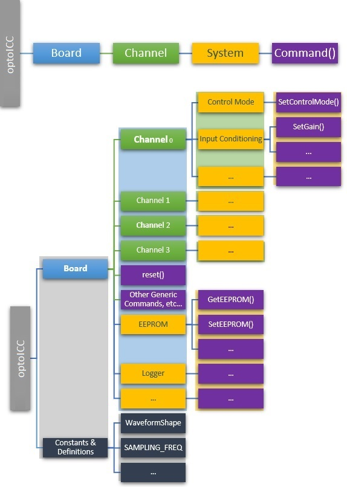

|
optoICC
|
|
optoICC
|
This Package contains classes to control ICC-4C and ECC-1C
ICC-4C refer to ICC-4C
ECC-1C refer to ECC-1C
The optoICC SDK is organized in the following way:
Board.Channel.System.RegisterCommand(parameters)

Board : Low/mid level object for operating the firmware such as vector patterns, simple/pro commands, etc
Channel : A given channel, which can set input types, gain, etc.
System : Each channel has its own stages. From here you can call methods that get/set individual registers.
Registers : Each system has several registers, which are dictionaries with elements regarding valid units/range.
To install optoICC package you need to use pip. optoICC package is dependent on optoKummenberg package so first you need to install this package. Both of these packages are included as wheel files in downloaded zip file. To install them run the following commands (replace # by exact version):
If necessary, flash the FW using: STM32 Cube Programmer Or by using Optotune Cockpit application. This build of optoICC is based on FW Version: 14352500-00-A_1.0.740516
Import necessary module and initialize a board
import optoICC icc4c = optoICC.connect() or optoICC.connect(port='COMX')
Define the system you want to interact with
sig_gen = icc4c.Channel_0.SignalGenerator
Start setting values
sig_gen.SetAmplitude(0.1)
Each Channel has a Manager for handling signal flow. This happens mostly behind-the-scenes, However, it is important to keep in mind the following procedure.
(1) Set Input Stage > (2) Set Input Conditioning > (3) Set Control Mode > (4) Set Output Limiting
For example, to output a static value on Channel_0 in open-loop (current) mode...
import optoICC icc4c = optoICC.connect() ch_0 = icc4c.channel[0] ch_0.StaticInput.SetAsInput() # (1) here we tell the Manager that we will use a static input ch_0.InputConditioning.SetGain(1.0) # (2) here we tell the Manager some input conditioning parameters ch_0.LinearOutput.SetCurrentLimit(0.7) # (4) here we tell the Manager to limit the current to 700mA (default) ch_0.Manager.CheckSignalFlow() # This is a useful method to make sure the signal flow is configured correctly.
The channel is configured. The output of the Static system will now proceed through the signal flow mentioned above.
Therefore, next we will configure the output of the Static System.
si_0 = icc4c.channel[0].StaticInput si_0.SetCurrent(0.075) # here we set a static output of 75mA.
To output a sinusoid on Channel_0 in open-loop (current) mode...
import optoICC icc4c = optoICC.connect() ch_0 = icc4c.Channel_0 ch_0.SignalGenerator.SetAsInput() # (1) here we tell the Manager that the sig gen is the desired input ch_0.InputConditioning.SetGain(1.0) # (2) here we tell the Manager some input conditioning parameters ch_0.Manager.CheckSignalFlow() # This is a useful method to make sure the signal flow is configured correctly.
The channel is configured. The output of the Signal Generator will now proceed through the signal flow mentioned above.
Therefore, next we will configure the output of the Signal Generator.
sg_0 = icc4c.Channel_0.SignalGenerator sg_0.SetShape(optoICC.Waveforms.SINUSOIDAL) # here we set the sig gen output waveform type sg_0.SetFrequency(10.0) # here we set the frequency in Hz sg_0.SetAmplitude(0.100) # here we set the amplitude in Amps sg_0.Run() # done.
There are many other systems to interact with and configure. For more information, see the links below...
Check out the link below for an overview of all of the available systems and their methods (such as OpticalFeedback, Logger, and VectorPatternUnit)
Additional operations are available directly through the Board object (get/set multiple, reset, etc)
For example, multiple set/get can be done (up to 8 at once).
After the following commands, the Signal Generator system will output a sinusoid on channel 0 (You must still configure the Manager!)
import optoICC icc4c = optoICC.connect() mngr = icc4c.Channel_0.Manager sig_gen = icc4c.Channel_0.SignalGenerator systems = [mngr.input, mngr.control, sig_gen.shape, sig_gen.frequency, sig_gen.amplitude, sig_gen.unit, sig_gen.run] values = [sig_gen.sys_id, sig_gen.sys_id, optoICC.Waveforms.SINUSOIDAL, 10.0, 0.1, optoICC.Units.CURRENT, True ] icc4c.set_value(systems, values) icc4c.get_value(systems)
Note: You can find which registers a system has by calling get_register_names
>>> sig_gen.get_register_names() ['unit', 'run', 'shape', 'frequency', 'amplitude', 'offset', 'phase', 'cycles', 'duty_cycle']